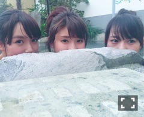
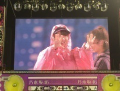

| 2016/09 08 Thu | ひめたん-0o0-その666 |
2日 セブン-イレブン限定ミニライブ
3日 東京ガールズコレクション
来てくださった皆様
ありがとうございました！
セブンイレブンさんのライブは
2ndアルバムを軸に置いたセットリストで
個人的にものすごく好きだった～
TGC、個人的にはファッションイベントでの
ライブは初めてだったのですが
いつもと違う環境でお勉強になりました！

あれから一週間か～やだ怖い。
4日は全国握手会でした。
風邪が治っていなかった為に
たくさんの方に
ご迷惑おかけしてしまいました( ´ ･ω･ ` )
夏は握手会なかったから 久々だねって、
初めましての方も多かったから
これからよろしくね仲良くしてねって、
そして、この日は暑くて、待ちが長くて
それでも並んで私たちに会いに来てくれて
本当に嬉しいよありがとうって
ひとりひとりに言いたかった......
逆に心配させてしまったり、
気を遣わせたり、不快な思いをした方も
中にはいたかもしれません。
本当にごめんなさい。
個別握手会行けないんだって方も
いらっしゃると聞いています、
だから全国握手会を逃したらまた暫く
お会い出来ない方もたくさんいるよね。
次、お会いできる時は
元気な姿をお見せできるよう努めます！
同じレーンだった純奈も
私のペースに合わせてくれたり
ひめ大丈夫？って気にかけてくれたり
なんて出来た子なんだ......と
1日お世話になりました。ありがとう！

2つ年下。見えない。
日曜の夜は、らじらー！サンデー
ゲストは声優アーツに下野紘さん、
乃木坂46から伊藤万理華ちゃん、
井上小百合ちゃんをお迎えしました！
NHK広島局「コイらじ」との
コラボ企画もありました～＊
久々のらじらー、
万全な状態で臨みたかった（ ; ; ）
らじらー始まって以来、
ラジオの時に喉のコンディションを
ほとんど崩したことがないのが
私の数少ない自慢の一つだったのに......
でも、久々にスタジオ入って改めて、
リラックス出来る場だなあと思ったし
ふたりが来てくれたこともあってか
超絶素のテンションで喋ってたo(^o^)o
ありがとう～また来てね～

～お知らせ～
雑誌
9/30 BUBKA 11月号
10/31 BUBKA 12月号

TV
9/10 H♪LINE
10/11～ NOGIBINGO!7
ラジオ
9/18 乃木坂46の「の」
9/21 RadiPrism
イベント
9/23 東京国際ブックフェアトークショー
リリース
9/30 NOGIBINGO!6 BD&DVD
11/9 16thシングル
NOGIBINGO!7
10月スタートです！お楽しみに～
それから
ブブカさんありがとうございます！
中元、2号連続で載ります＼(^o^)／
ぐ～～

ぱ～～！
神宮のリハ中、私がひとりで遊んでたら
カメラさんが付き合ってくれた画。
私の動きに合わせて
ルーズになったり寄ったりしてくれ......
伝わる？この話。
(＊´・ω・＊)
コメント(641)
2016/09/08 23:42